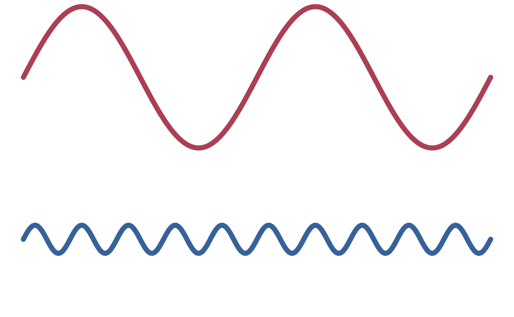
Harmonics & Resonance
Complex Sounds
Complex Sounds
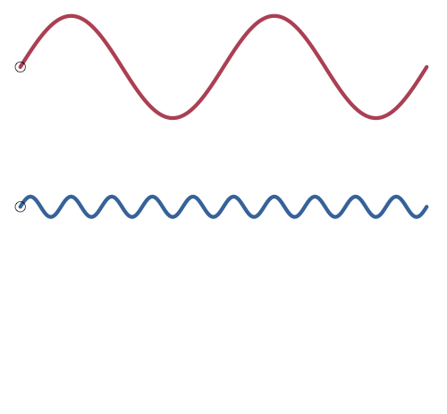
Complex Sounds
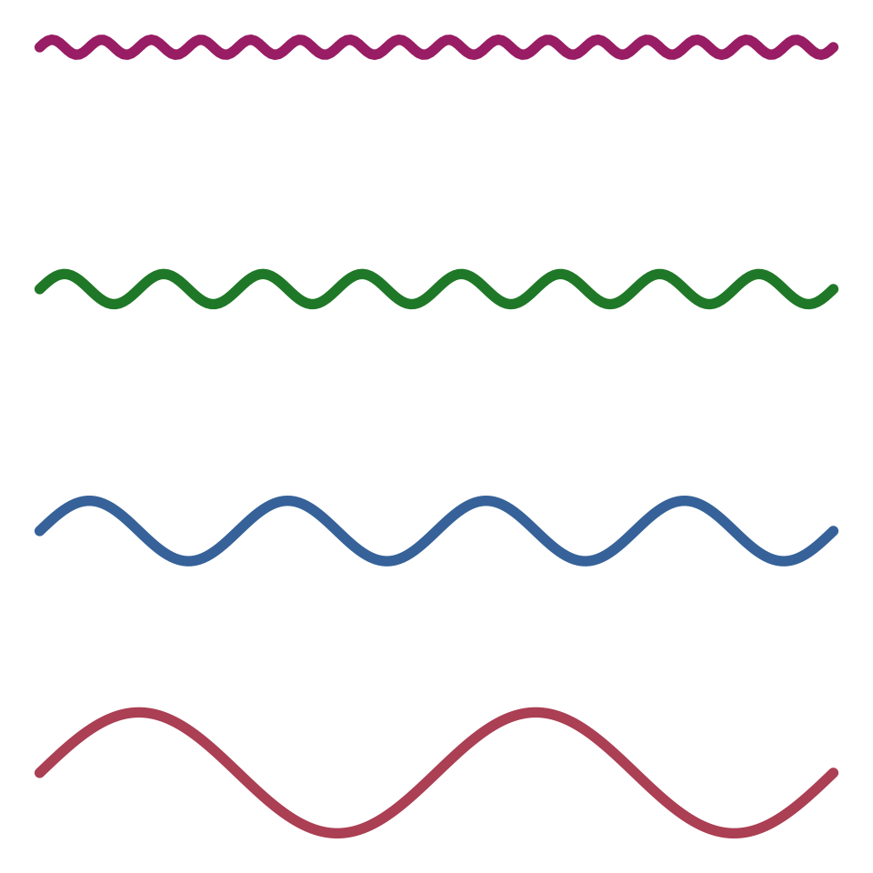
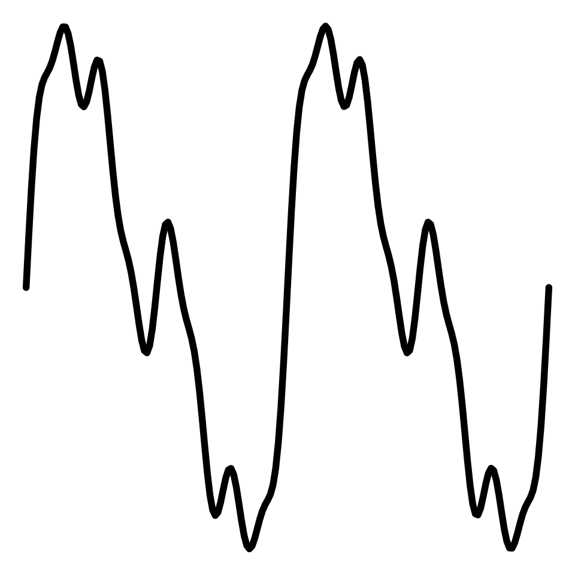
Complex sounds
Complex Sounds
Interference
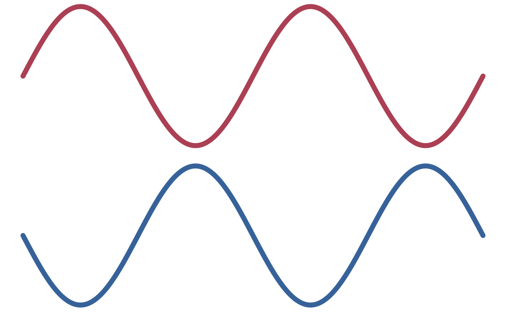
Complex Sounds
Interference
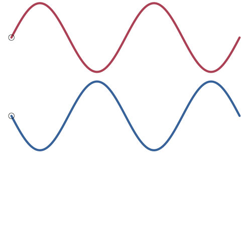
The Source-Filter Model
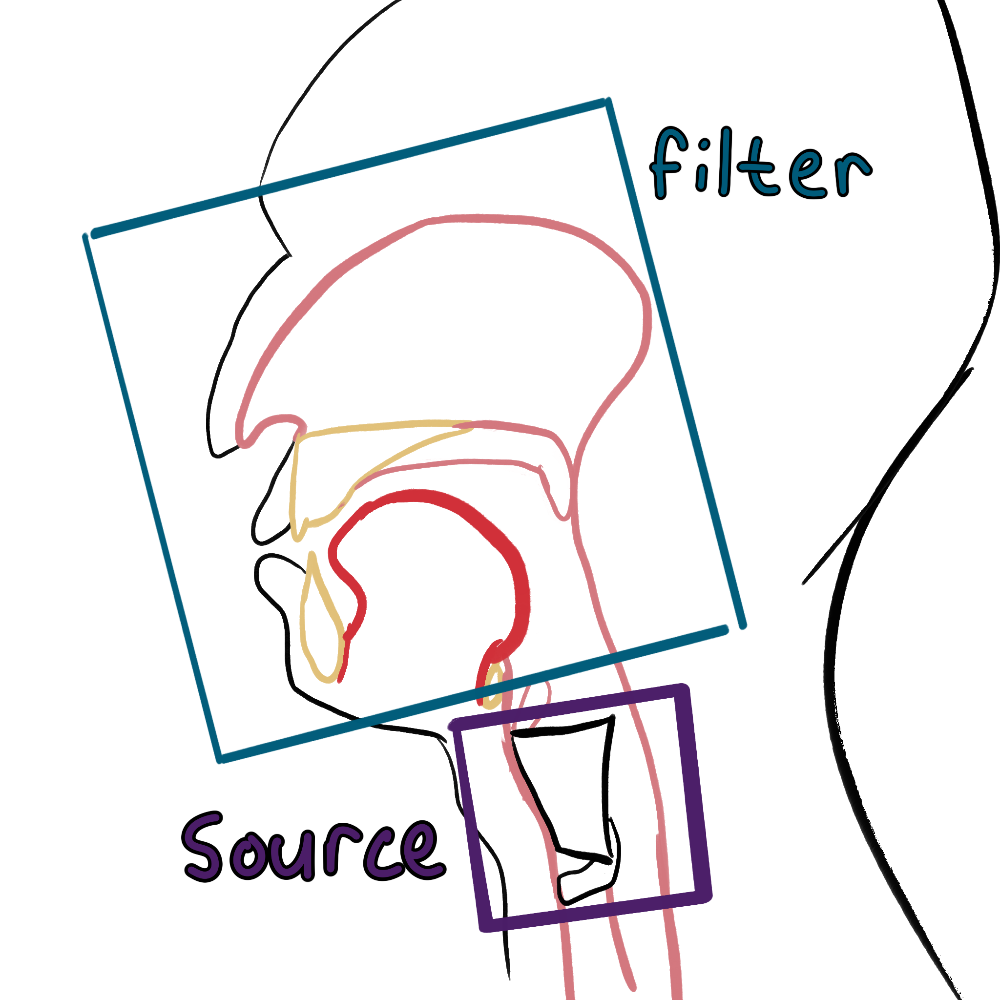
Fundamental Frequency - From the Source
The wavelength is proportional to the string length.
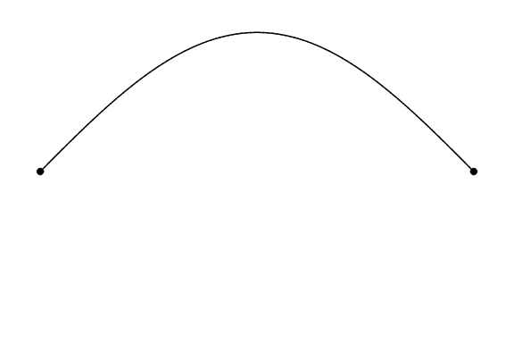
Fundamental Frequency - From the Source
Wave Length = 2Length
Harmonics - From the Source
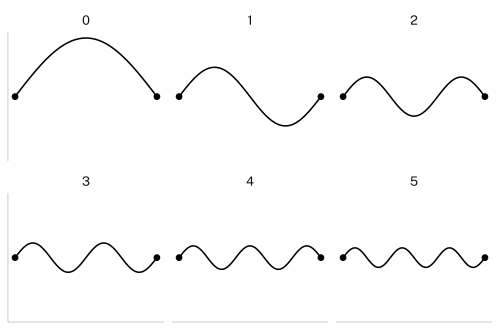
Harmonics - From the Source
\[ WL_n = \frac{2L}{n} \]
When \(n\) = 1, \(WL\) is the fundamental frequency.
For integers > 1, \(WL\) is a harmonic.
Every harmonic wavelength is the fundamental divided by a whole number integer.
Every harmonic frequency is a whole number multiple of the fundamental frequency.
Harmonics
Wavelength to Frequency
Harmonics
Harmonics
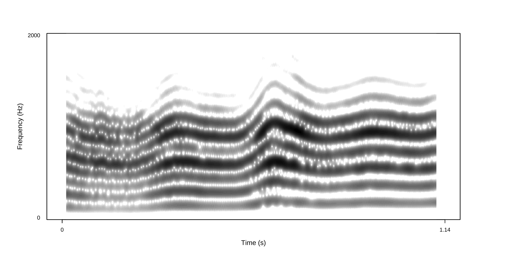
Harmonics
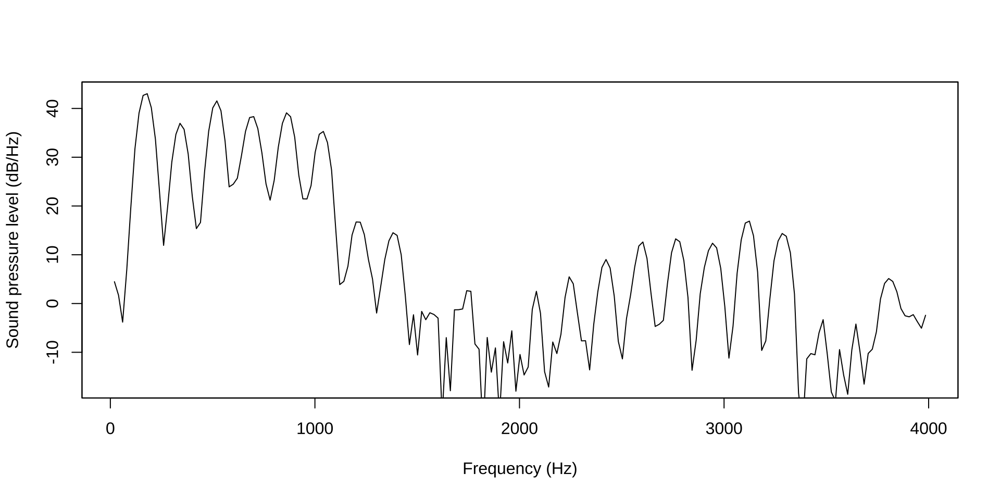
Harmonics
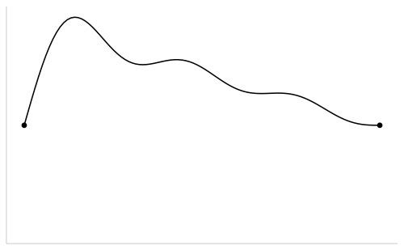
Harmonics
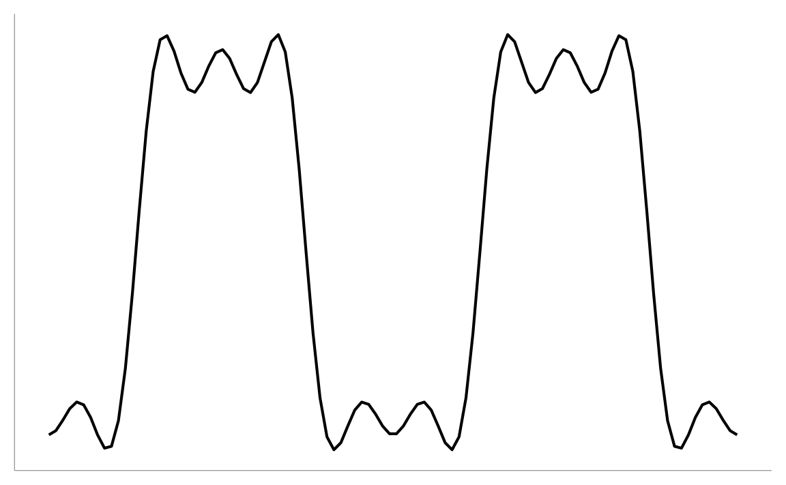
Standing Waves
Nodes and Antinodes
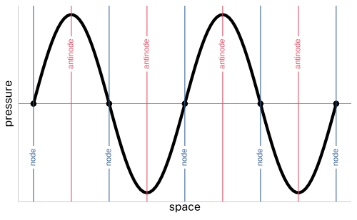
From the source to the filter
The physical activity of the vocal folds generates the fundamental frequency and the harmonics.
Then, the air pressure waves propagate through your vocal tract, which introduces resonances.
Resonance - From the Filter
Pressure
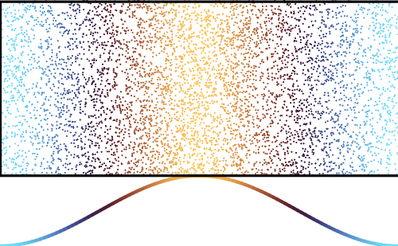
Pressure & Displacement
Displacement
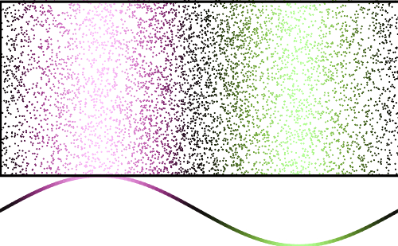
Resonance - From the Filter
Resonance - From the filter
Wavelengths that put a displacement antinode at the lips are resonant frequencies.
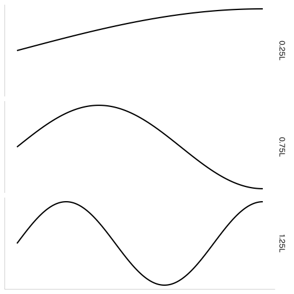
Resonance - From the Filter
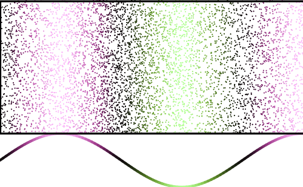
Resonance - From the Filter
\[ F_n = \frac{(2n-1)c}{4L} \]
\[ L = \frac{(2n-1)c}{4F_n} \]
\(n\) = resonant frequency
\(c\) = speed of sound